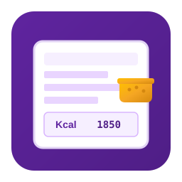

Polenta Meal Planner

Description
Polenta Meal Planner helps you plan your daily meals on Windows. Maintain a personal food database, build menus for breakfast, lunch, dinner and snacks, and see calories, protein, carbs and fats in real time.
Platform: Windows 10/11 (x64)
License: Freeware
Version: 1.0.0
Features
- Food database
Store foods with macros per 100g, brands, default portions and notes. - Daily meal planner
Organize meals by time of day with drag-and-drop from the food list. - Macro totals
Per-meal and daily totals for kcal, protein, carbs, fats and saturated fat. - Filter & copy
Quick food search (Ctrl+F), copy daily totals or the full menu to the clipboard. - Export
Export a formatted daily menu to a text file. - Themes
Bootstrap 5 and classic Windows-inspired looks.
Data storage
Foods and menus are saved as XML files in Foods and Menus folders next to the application executable.
Your data stays on your PC.